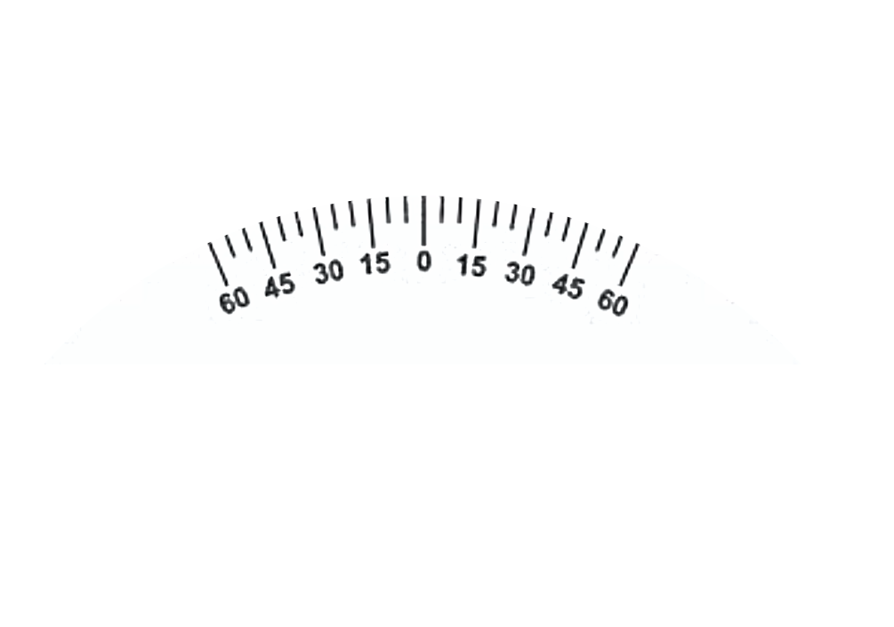
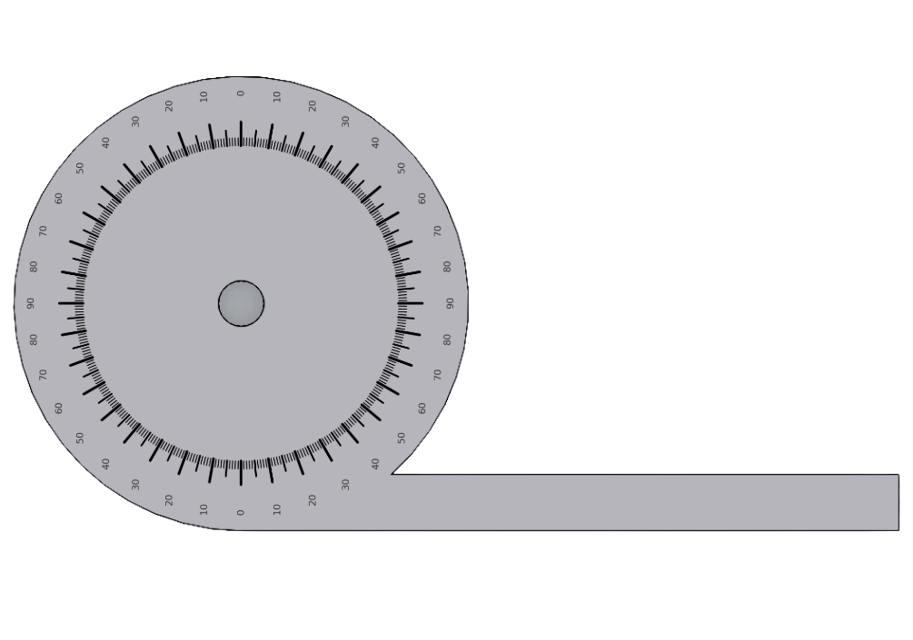
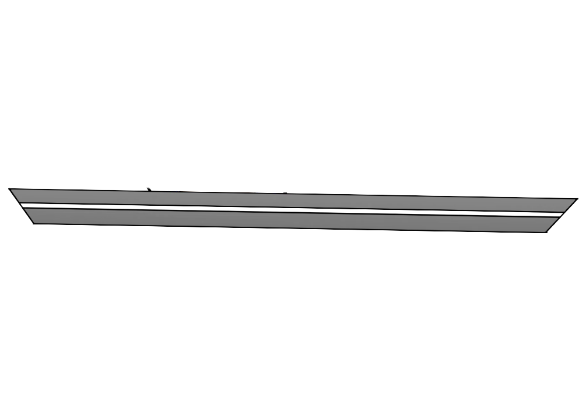

Bevel Protractor — Virtual Lab
  
A3
A1
A2
Rotate
Align
Measure
Instructions:
1️⃣ Click
Rotate
to select the workpiece angle.
2️⃣ Click
Align
to set the reference edge.
3️⃣ Click
Measure
to record the MSD and VSD values.
4️⃣ Click
Calculate
to display the final readings.
Angle
MSD
VSC
A1
A2
A3
Calculate
Bevel Protractor — Angle Determination
Formula:
Angle = MSD + (VSC × LC)
Least Count (LC):
1/12 or 0.0833